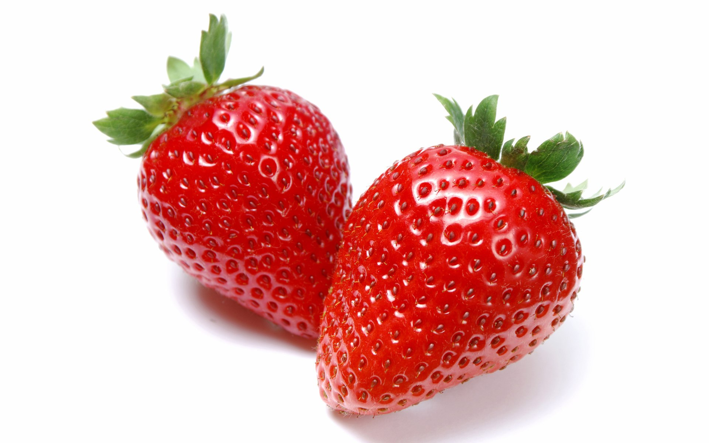

红草莓
是谁红红的？
是谁有甜有酸？
是谁带着一顶绿？
是谁被称为“水果之王”？
对了，那就是红红的草莓。
红红的草莓,是胸前的红领巾，
是红旗的一角；
红红的草莓,是烈士的鲜血，
让我们铭记在心。
红红的草莓,是威武的国旗。
象征着胜利；
红红的草莓，是中国共产党。
向着胜利前进;
红红的草莓，是早上的太阳，
我们就是太阳，
燃起祖国的希望！

草莓，甜甜的，酸酸的，
刚咬下，
一股甜甜的汁液在我心头荡漾。
有人问我：“草莓是什么？”
我说：草莓甜甜的，酸酸的。
酸味像入侵的敌人，
甜味像我国的军队，
英勇奋战，
草莓一高兴，变甜了，
草莓有一股甜甜的汁液，
像妈妈一样哺育着我们。
草莓是胸前的红领巾，
是烈士的鲜血，
是威武的国旗，
是亲爱的党
草莓是早上的太阳，
象征着我们，
奋力拼搏，
向着祖国的未来，
燃起一片希望！
轻工二校 三年七班 王熙同
||||||返回|||||